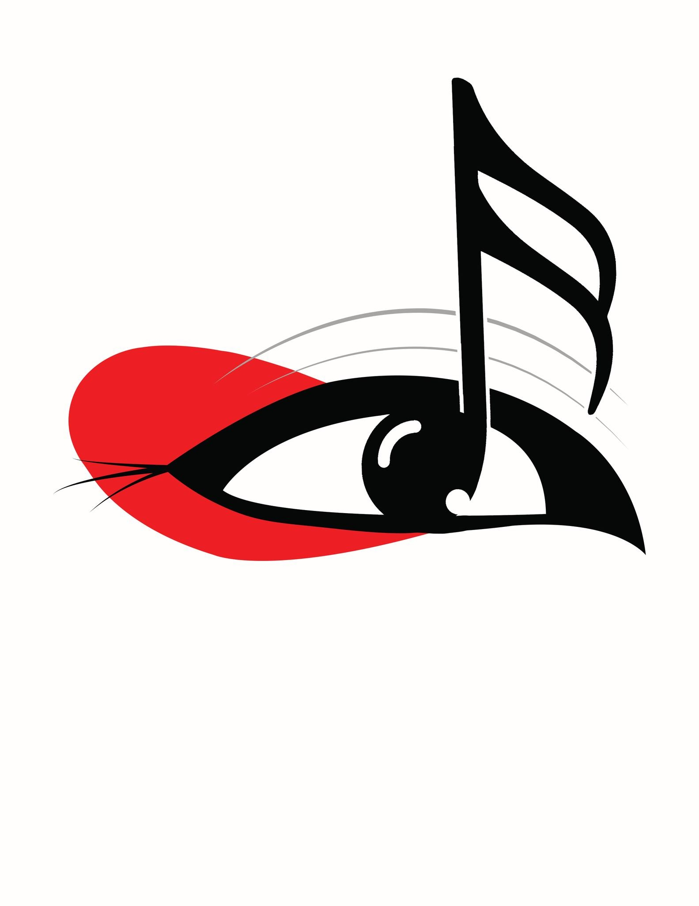
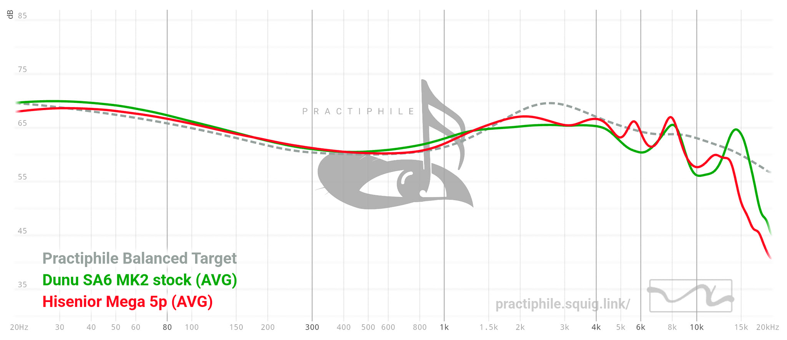
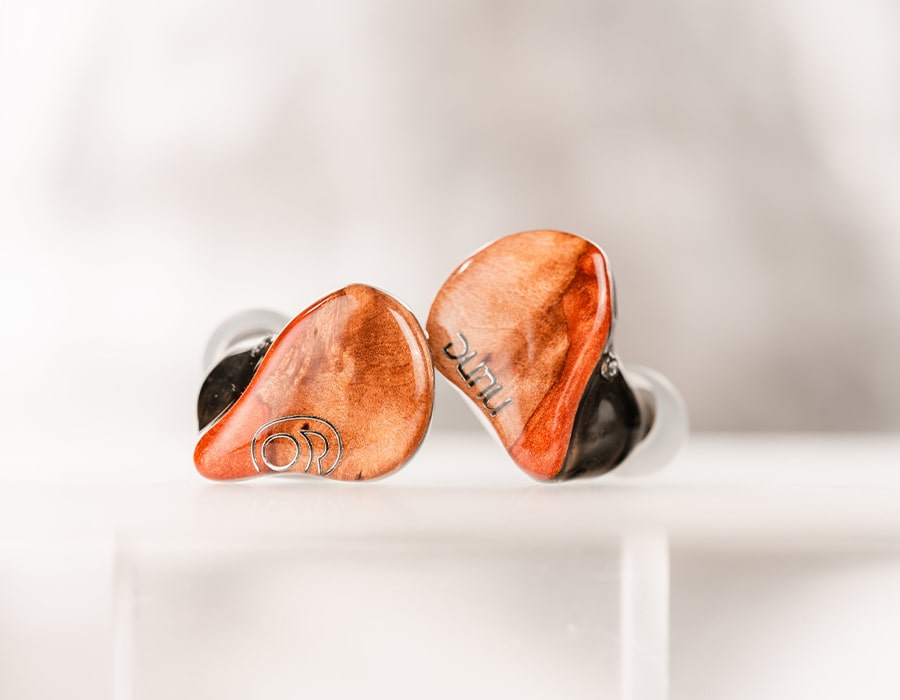

PRACTIPHILE
The DUNU is a warm U-shaped set. It has got enough bass that "might" please bass heads. Mids are warm and lush that makes vocals sound natural and organic. Treble presentation is smooth without peaks but lacks a bit of sparkle up top to compensate for the quantity of bass. Bass on HM Pro is a really big jump from the original Heart Mirror. There is almost a whooping 10 db difference in subbass, and probably around 5 db in midbass. You will notice it, and yes they slam. Although I find the decay to be rather slow and the attack is a little blunted. It feels like the DD is struggling for air to breath. I am not sure what they did, but it sounded like a Y4 filter mod on the OG HM. There is good macro dynamics for the PRO, and at the same time, all my attention is always shifted to the lower region because of how apparent the bass is. Other than that, I find the bass to be still rather controlled and detailed. It resolves bass guitars pretty well and drop Ds are not a problem. This is not just a bassy IEM, this is well done bass in terms of separation of subbass and midbass. If the OG Heart Mirror is the master of high frequencies, this PRO is doing wonders in the lower regions. Every bass drum hit is distinct from bass guitars in djents and that is freakin impressive.
Mids are lush and organic. I kinda like the timbre of instruments and vocals with the PRO. Although the vocals are a bit recessed, they have enough definition and center imaging is very good. There is minimal bleed from bass into the lower mids that is why it has this tinge of warmth to them. Going back to vocal center imaging, I really like it a lot because it presents this realism that other sets struggle to do. There is enough space between vocals and instruments wherein they do not overlap even in busy tracks. The natural and organic timbre is favoring male vocals and acoustic guitars. Percussions like snare drums have good snap and doesn’t over emphasize air in the last decay. Very good harmonics with just the right amount of edge and bite without being too aggressive.
Treble is smooth and it is the complete opposite of OG Heart mirror. I cant say the PROs are less detailed, but it definitely is not forward compared to its predecessor. You get enough micro nuance that can compliment the upper midrange, just to give that extra bite and edge. It is not overdone but I think it will stand out more had there been a few dbs deduction in midbass. Anyhow, I do not get any peaks, fatigue or sibilance from the PROS. It is a smooth and fun listen overall. The tuning is too safe that I cant say much haha.
Technicalities on these are not bad, and not great either for the price. There have been a lot of nicely tuned sets right now in the sub $100, not to mention planars and hybrids that are now on hype. When we do not put the price into consideration, I can easily praise how the DUNU handles center imaging ang vocal tone. I think this has something to do with the width of stage. The DUNU kind of shares the same stage proportion as the OG HM. One of my quirks on the OG HM is the narrow staging, but the air frequencies of HM helps a lot in making them open sounding. Now with the PRO, upper treble is significantly reduced and so my attention is shifted to either the bass and upper mids. But because the stage is narrow, you also get every slam of bass right at the center when there are no vocals singing haha. It’s the deep throat kind of center imaging wherein every hit makes you gag, either in pleasure or disappointment.
What can I say. I think I have said everything in this writing. The SA6 MK2 is a wonderful set if it matches your preference. I highly recommend auditioning these unless your wallet has been itching to buy a new pair haha.
As for my scoring, even if I liked them during the last days, I still think the Ultra’s are a tad better for my preference. I was really considering if I gave them an S rank, but it just feels wrong. You know what I mean?
Although some people say that it is an alternative to the Ultra’s, well yes. But it was really hard for me to enjoy the Dunu SA6 MK2. The twist I mentioned when changing the termination to 4.4 might even be placebo haha.
Having said that, this has been my user experience of the DUNU SA6 MK2. They present a balanced sound with good extension in both ends. Bass is tight and does not feel like a BA at all. Mids are well resolved and vocals are forward sounding even with a lesser gain in 2-5k. Treble is well extended but I thought they could use a bit of presence and body on cymbal attacks. Technicalities are comparable to TOTL sets, if you are after that kind of sound.